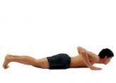
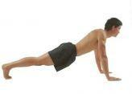
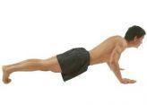
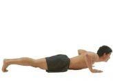

Push-ups are a common fitness exercise that mainly exercises the muscles of the upper limbs, waist and abdomen, especially the chest muscles.
1.Chest on the floor, palms flat on the floor, arms slightly wider than shoulders, feet parallel, toes on the floor. Look ahead, not to the ground.
2. Spread your elbows out to the sides and slowly straighten your arms.
3. When your arms are fully extended, pause for a moment.
4. Slowly bend your arms and lower your body.
5. Wait until your chest touches the ground and pause for a while (just touching the ground, not lying on your stomach).
6. Repeat the steps above. It is suggested that each exercise should be divided into 5 groups, and each group should take a rest interval of 2 minutes. The first 4 groups should take 20 times each, and the last group should have unlimited number of times. Try your best.